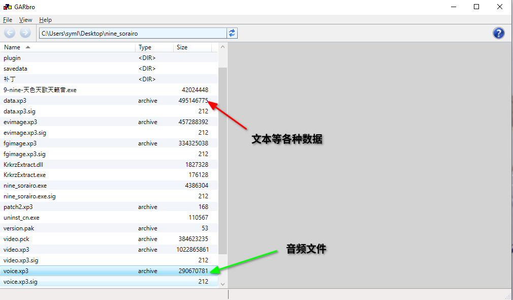

在 B 站上面看到了这个通过 Tacotron2 合成纸片人语音的视频，感觉很有意思，于是乎开始折腾。
基于tacotron2合成宁宁语音
Tacotron2 是一个端到端的 Text-to-Speech (TTS) 的神经网络模型，输入文本之后输出语音。因为也没有去深入了解这个模型的相关信息（毕竟做这个单纯是为了好玩），这篇主要也就折腾一下这个模型的训练之类的。
# 素材提取
正如视频的作者所说，Galgame 由于其特性，是绝佳的 TTS 训练素材来源 —— 纯净无噪声的音频信息和音频能够完美对应的文本信息标注，直接省去了制作数据集的繁琐过程。
要做的实际上也就是对 Galgame 文件进行解包，我就趁手拿了手头有的 9-nine 的九和天两部来做。
这两个作品用的引擎是 KiriKiri，可以通过 Garbro 进行解包。游戏根目录下的 voice.xp3 文件保存了语音信息，而 data.xp3 其中包括了详细的文本信息。

解包 data.xp3 得到的 scn 文件夹下是所有的场景信息，其中包括了所有的文本，但是经过了加密。通过 FreeMoteToolKit 可以进行解密。
从 voice.xp3 中导出的音频文件是采样率 44100Hz 的 ogg 文件，但是 tacotron2 需要的是 22050Hz 的 wav 文件，因此需要写一个小脚本来进行转换：
import os | |
filenames = os.listdir('./dataset/recordings') | |
for filename in filenames: | |
os.system('ffmpeg -i ./dataset/recordings/' + filename + ' -ar 22050 ./dataset/wavs/' + filename[:-4] + '.wav') |
接下来是要解决文本的信息。前面通过解密软件能够导出所有的场景信息，但是其中的台词文本是混在场景中的，因此我们需要去解析整个文件。
解析出来的结果形如 a01.txt.json 的形式，一个文件中的 json 构成一个字典，场景信息构成一个列表，在字典的 scenes 键中。
一些包含了对话的场景具有 texts 键，其对应的值为一个列表，存储了对应的说话人、台词文本、对应音频文件名等信息。
根据文件结构，就可以对每个场景进行解析。
# 数据预处理
但是游戏文本中包含的是日语语音和日文，因此训练时需要将日语文本转换为对应的罗马音。
这里采用的思路是，先对日语进行分词，接下来将分词的结果转换为罗马音，用罗马音标注文本进行训练。整体类似这样的形式：
原文：唐澤貴洋くん、ど、どうしたんだ、いきなり大声出して？ | |
分词：唐澤 貴洋 くん 、 ど 、 どう し た ん だ 、 いきなり 大声 出し て ？ | |
注音：karasawa takahiro kun 、 do 、 dou shi ta n da 、 ikinari oogoe dashi te ？ |
日语分词采用的是 MeCab 框架，罗马音使用 pykakasi 进行标注。MeCab 分词之后会在结尾追加 \n ，需要我们将其去掉。同时，设置的 kakasi.setMode('s', True) 会在罗马音之间增加空格，可以删去，也可以保留。
此外，预处理时还需要对一些标点符号进行处理。LJSpeech 数据集的 metadata.csv 文件的格式为用 | 分隔开的 音频文件|文本|文本 的格式，tacotron2 需要的数据格式为 音频文件|文本 。对数据进行处理之后我们还要将数据分为训练集和验证集两个部分，对应的文件路径在 hparams.py 中定义。
这样，预处理部分就基本完成了：
import os | |
import json | |
import pykakasi | |
import MeCab | |
voice_filenames = os.listdir('./dataset/wavs') | |
filenames = os.listdir('./dataset/scenes') | |
kakasi = pykakasi.kakasi() | |
kakasi.setMode('H', 'a') | |
kakasi.setMode('K', 'a') | |
kakasi.setMode('J', 'a') | |
kakasi.setMode('s', True) | |
conv = kakasi.getConverter() | |
mecab_tagger = MeCab.Tagger("-Owakati") | |
metadata = open("./dataset/metadata.csv", "w") | |
for filename in filenames: | |
with open("./dataset/scenes/{}".format(filename), encoding="utf-8") as f: | |
data = f.read() | |
json_file = json.loads(data) | |
for scenes in json_file["scenes"]: | |
# index 0: speaker | |
# index 2: text | |
# if there are multiple languages, japanese version is the first one | |
# index 3: about voice | |
if "texts" not in scenes: | |
continue | |
scene = scenes["texts"] | |
for text_info in scene: | |
speaker = text_info[0] | |
if speaker != "天": | |
continue | |
text = text_info[2] | |
if type(text) == list: | |
# like this: | |
# "天", | |
# null, | |
# [ | |
# [null,"「にぃに、ほんとによかったの？」"], | |
# ["Sora","\"You sure you're okay with this, my dude?\""], | |
# ["天","「哥，這樣真的好嗎？」"] | |
# ], | |
# ... | |
text = text[0][1] | |
while "\\n" in text: | |
text = text.replace("\\n", "") | |
text = mecab_tagger.parse(text).strip() | |
voice_info = text_info[3] | |
if type(voice_info) == list: | |
voice_info = voice_info[0] | |
elif voice_info is None: | |
continue | |
if voice_info["name"] != "天": | |
continue | |
voice = voice_info["voice"] | |
if filename[0] == "a": | |
voice_file = "1-{}.wav".format(voice) | |
else: | |
voice_file = "2-{}.wav".format(voice) | |
if voice_file not in voice_filenames: | |
continue | |
roman_text = conv.do(text) | |
roman_text = roman_text.replace("。", ". ") | |
roman_text = roman_text.replace("？", "") | |
roman_text = roman_text.replace("！", "") | |
roman_text = roman_text.replace("，", ",") | |
roman_text = roman_text.replace("、", ",") | |
roman_text = roman_text.replace("：", "") | |
roman_text = roman_text.replace("…", "") | |
roman_text = roman_text.replace("～", "") | |
roman_text = roman_text.replace(" ", "") | |
roman_text = roman_text.replace("」", "").replace("「", "") | |
while " " in roman_text: | |
roman_text = roman_text.replace(" ", " ") | |
roman_text = roman_text.strip() | |
if len(roman_text) < 10: | |
continue | |
if "%" in roman_text: | |
continue | |
print("-------\n{}\n{}\n{}\n".format(text, roman_text, voice)) | |
metadata.write("wavs/{}|{}\n".format(voice_file, roman_text)) | |
metadata.close() | |
with open("./dataset/metadata.csv", "r") as f: | |
lines = f.read().split("\n") | |
while "" in lines: | |
lines.remove("") | |
# using sklearn to split the dataset into train and validation sets | |
from sklearn.model_selection import train_test_split | |
train, validation = train_test_split(lines, test_size=0.2) | |
with open("./dataset/train.csv", "w") as f: | |
for line in train: | |
f.write(line + "\n") | |
with open("./dataset/validation.csv", "w") as f: | |
for line in validation: | |
f.write(line + "\n") |
# 训练 & 结果
Tacotron2 使用了 Tensorflow 1.15 版本，因此使用的 Python 版本最高应该为 3.8，这个需要注意。
其他整体来说训练过程就是在已有的模型基础上进行迁移学习，由于模型本身的规模就极其庞大，训练的时间和消耗也非常大，这方面就不用太多说了……
整体来说效果似乎还是不错的？
讲实在话没啥技术含量，不过好玩是真的好玩（